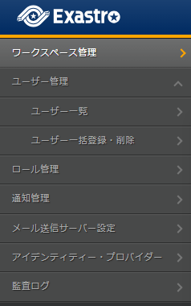

2. Workspace¶
2.1. Introduction¶
This document explains Workspaces in the Exastro system.
2.2. Workspace¶
Workspaces are work environments for centrally managing design information for automating tasks and system structure information.
They come with the function to centrally manage IaC information used to manage, construct and preserve systems, setting files and system values (past, present and future setting values).
2.3. Create workspace¶
A workspace must be created to use the Exastro IT Automation functions.
Workspaces are created for each automation targeted system environment, Normal, Production, Staging and Development.
2.3.1. Steps to create workspaces¶
Follow the steps below to create a workspace.
- Log in to the Organization created in Organization as the Organization administrator.
- From the menu, click .
- This will display the page. Click Create.

警告
The Create button is only displayed when the user is logged in as the Organization administrator. - This will display the page. Input the Workspace's information and click the Register button.

表 2.38 New workspace registration¶ Item name
Description
Workspace ID
An unique ID is automatically given by the system.This ID will be used to link systems.Workspace name
Input a name for the Workspace.Environment list
Input a list of environments the workspace will be created to (Staging, Development, Production, etc).This environment can be given to assigned to operations.Description
Input a description for the Workspace.注釈
Even if the workspace creator (Organization administrator) doesn't have any roles configured to them, they will automatically have granted access to the workspace.For more information regarding first-time logins, see Login.


2.3.2. Edit workspace¶
Follow the steps below to edit workspaces.
- Log in to the Exastro system as the Organization administrator.
- From the menu, click .
- This will display the page. Click the Edit button.

警告
The Edit will not be displayed when the Workspace administrator is logged in. - This will display the page. Edit the desired Workspace information and click the Register button.

表 2.39 Workspace edit¶ Item name
Description
Workspace ID
The ID can not be edited.Workspace name
Input a name for the Workspace.Environment list
Input a list of environments the workspace will be created to (Staging, Development, Production, etc).This environment can be given to assigned to operations.Description
Input a description for the Workspace.


2.3.3. Delete workspace¶
Follow the steps below in order to delete workspaces.
- Log in to the Exastro system as the Organization administrator.
- From the menu, click .
- This displays the page. Click the Delete button.

警告
The Edit will not be displayed when the Workspace administrator is logged in. - Doing so will display a message asking for confirmation. Input Organization ID/Workspace ID and click Yes, delete.

Tip
It is not possible to restore Workspaces once deleted.


{kind=link}